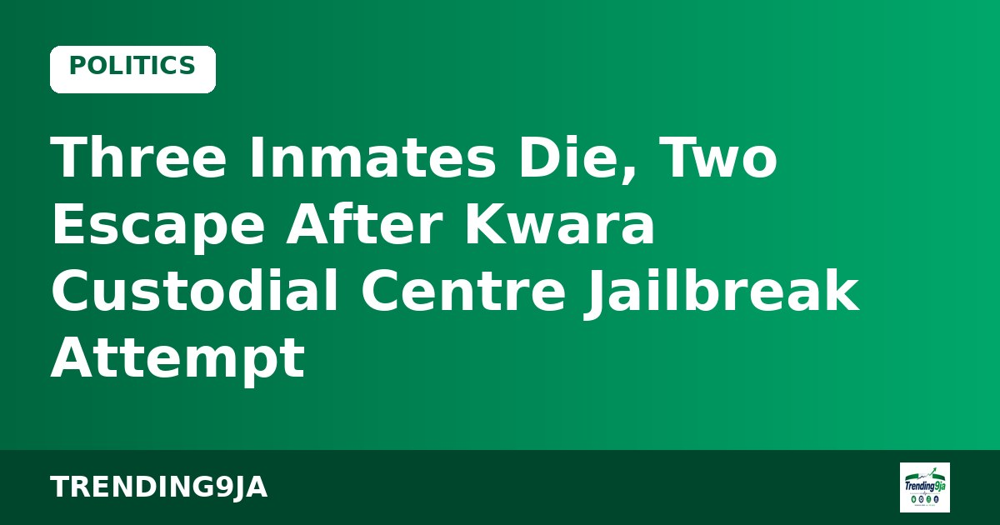

Ireland to End Short-Stay Visa Waiver Scheme for 5 Countries by December 2026
Ireland will stop its Short-Stay Visa Waiver Programme for five Gulf nations on December 31, 2026, according to Legit.ng.

The Independent National Electoral Commission has launched automated verification systems and formed a multi-agency partnership to guard the upcoming 2027 general elections against artificial intelligence and local-language falsehoods, Punch reports.
The INEC Chairman, Prof. Joash Ojo Amupitan, made this known in Abuja during a two-day regional multi-stakeholder conference on election disinformation. Represented by his Chief Press Secretary, Dayo Oketola, Amupitan explained that the electoral body is partnering with the National Orientation Agency, civil society groups, and fact-checking organizations to protect election credibility from manipulated media.
The conference was put together by the Spanish public organization, Fundación para la Internacionalización de las Administraciones Públicas, alongside FactCheckAfrica under an EU-backed ECOWAS project. The gathering drew media professionals, civil society representatives, tech experts, and election officials from Nigeria, Benin, and The Gambia to analyze emerging threats such as AI-driven content and deceptive native-language broadcasts.
Speaking at the event, FactCheckAfrica founder Abideen Olasupo raised concerns over hyper-local manipulation, noting that disinformation actors frequently target underserved communities using indigenous languages. He emphasized that expanding access to accurate facts in local dialects remains essential for safeguarding elections across West Africa.
International diplomats also urged regional cooperation to tackle cross-border false narratives. Massimo De Luca of the European Union Delegation cautioned that electoral disinformation can manipulate Nigerians living abroad, while Spanish Ambassador Félix Costales stressed the need for robust fact-checking that does not restrict media freedom.
Sources: Punch
← More Politics stories
Ireland will stop its Short-Stay Visa Waiver Programme for five Gulf nations on December 31, 2026, according to Legit.ng.

Three condemned inmates have died and two escaped after a jailbreak attempt at the Oke Kura Custodial Centre in Kwara State, according to reports.

Abia Governor Alex Otti has urged China Harbour Engineering Company to fully partner with the state to build and deliver the proposed Abia Sea Port City project.
Nigeria's trending news, politics and entertainment, straight to your email.
By subscribing you agree to our Privacy Policy. Unsubscribe any time.